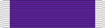

Purple Heart
DecorationPH
For members wounded or killed as a result of enemy or hostile action.
Check your eligibility and build your ribbon rackHow you get it
A decoration must be officially awarded. Meeting the standard isn't enough: someone has to recommend you and the approval authority has to sign off. The citation and special order are your proof.
Approval: Approved through the chain of command; veterans apply to the Department of the Air Force Purple Heart Review Panel.
It belongs on your record if
- You received it: a citation and special order were issued to you, or it's on your DD-214 or personnel record
- It was approved, but it's missing from your DD-214 or personnel record
- You have a documented wound from a qualifying circumstance (listed below) that was treated by a medical officer, but you never received the medal. You may apply to the Purple Heart Review Panel
What it's awarded for
- Wounded in action against an enemy of the United States, or by an act of such an enemy, with the wound requiring treatment by a medical officer
- Wounded in action with an opposing armed force of a foreign country, or by an act of any hostile foreign force
- Wounded while serving with friendly foreign forces engaged in armed conflict where the U.S. was not a belligerent party
- Wounded after March 28, 1973 in an international terrorist attack recognized for award of the Purple Heart
- Wounded after March 28, 1973 by military operations while serving outside the U.S. as part of a peacekeeping force
- Wounded on or after Dec. 7, 1941 by friendly weapon fire while directly engaged in armed conflict
- Wounded while held as a prisoner of war, or while being taken captive
- Wounded on or after Sept. 11, 2001 while on active duty in an attack by a foreign terrorist organization targeting you because of your military status
Quick facts
- Category
- Personal decorations
- Type
- Decoration
- Authorized devices
- Second and subsequent awards of the Purple Heart are denoted by an oak leaf cluster for Air Force and Space Force military members.
- WAPS points
- 5
- Position in the AFPC listing
- 11 of 91 (listed in order of precedence)
Full AFPC fact sheet text
Background
The Purple Heart, as we know it today, was established by War Department General Order No. 3, published on February 22, 1932. Since that time, the Purple Heart award criteria have periodically evolved based on foreign military conflicts and/or the enemy with which U.S. forces have engaged. Initially the award was specific to the U.S. Army, but Presidential decree expanded the medal to the U.S. Navy and the U.S. Coast Guard in 1952, and to the U.S. Air Force in 1947. No additional changes were needed for the U.S. Space Force to qualify for the medal.
Medal description
The heart-shaped medal is one of the best known and most beautiful of our decorations. It was designed by Elizabeth Will and modeled by John R. Sinnock. The inner heart on the obverse is of purple plastic (originally enamel), and the sculptured outer heart of gold-colored metal. On the Purple Heart General Washington is shown in profile, facing left, in a relief also of gold-colored metal. Above this heart is Washington’s coat of arms, an enamel shield of white with two horizontal bands of red, and above them three red stars with sprays of green leaves on either side of the shield.
The reverse of the medal is entirely of gold-colored metal, including the shield and leaves. Within the sculptured outer heart and below the shield is the inscription, set in three lines, “For Military Merit” with a space below for the recipient’s name. The ribbon is deep purple with narrow white edges.
Criteria
The Department of the Air Force policy and procedures for awarding the Purple Heart is outlined in Department of the Air Force Manual 36-2806, Military Awards: Criteria and Procedures.
The Purple Heart is awarded to any member of the U.S. Armed Forces who, while serving under competent authority after April 5, 1917, has been wounded, killed, or who has died or may hereafter die of wounds received under any of the following circumstances:
- In any action against an enemy of the U.S.
- In any action with an opposing armed force of a foreign country in which the Military Departments are or have been engaged.
- While serving with friendly foreign forces engaged in an armed conflict against an opposing armed force in which the U.S. is not a belligerent party.
- As a result of an act of any such enemy or opposing armed forces.
- As the result of an act of any hostile foreign force.
- After March 28, 1973, as a result of an international terrorist attack against the U.S. or a foreign nation friendly to the U.S., recognized as such an attack for purposes of award of the PH by SecAF, or jointly by the Secretaries of the Military Departments concerned if members from more than one Military Department are killed or wounded in the attack.
- After March 28, 1973, as a result of military operations while serving outside the territory of the U.S. as part of a peacekeeping force.
- On or after December 7, 1941, pursuant to 10 USC § 1129, as the result of action by friendly weapon fire while directly engaged in armed conflict, other than as a result of an act of an enemy of the U.S., unless the wound is the result of willful misconduct of the member.
- Before April 25, 1962, pursuant to PL 104-106 § 521, while held as a POW, or while being taken captive, in the same manner as a former POW who is wounded on or after that date while held as a prisoner. A person is considered a former POW if the person is eligible for the POW Medal under 10 USC § 1128.
- On or after 7 December 1941, to a service member who is killed or dies while in captivity as a POW under circumstances establishing eligibility for the POW Medal pursuant to 10 USC § 1128, unless compelling evidence is presented that shows that the member’s death was not the result of enemy action.
- On or after 11 September 2001, pursuant to 10 USC § 1129a, to a service member on active duty who is killed or wounded in an attack by a foreign terrorist organization in circumstances where the death or wound is the result of an attack targeted on the member due to such member’s status as a member of the armed forces, unless the death or wound is the result of the member’s willful misconduct. An attack by an individual or entity is considered to be a foreign terrorist attack if the individual or entity was in communication with the foreign terrorist organization before the attack, and the attack was inspired or motivated by the foreign terrorist organization.
- To assist in making a PH determination pursuant to 10 USC § 1129a, the Secretary of the Air Force may request an intelligence assessment from the Defense Intelligence Agency’s Defense Combating Terrorism Center.
- After May 17, 1998, pursuant to 10 USC § 1131, the PH may only be awarded to a person who is a member of the armed forces at the time the person is killed or wounded under circumstances otherwise qualifying that person for award of the PH. Prior to this date, the Secretary of the Air Force was authorized to award the PH to U.S. civilians who were serving under competent authority in any capacity with an armed force of that department.
Eligibility
A wound for which the Purple Heart is made must have been of such severity that it required treatment, not merely examination, by a medical officer. Treatment of the wound should be documented in the service member’s medical or health record. In addition, the Purple Heart may be approved for wounds treated by a medical professional, other than a medical officer, provided a medical officer includes a statement in the service member’s medical record that the extent of the wounds was such that they would have required treatment by a medical officer if one had been available to treat them.
A wound is an injury to any part of the body from an outside force or agent. The term encompasses all kinds of wounds and other injuries caused by an outsider force or agent, whether there is a piercing of the body, as in a penetrating or perforating wound, or none, as in a contused wound; all fractures, burns, blast concussions, all effects of gases and like chemical and biological warfare agents; and the effects of exposure to radioactive substances.
1. Examples of enemy-related injuries which clearly justify the award of the PH include injuries caused by: enemy bullet, shrapnel injuries that require wound closure or have retained foreign bodies, fractures, perforated eardrum, inhalation injuries or burns due to smoke, fumes, or chemical agents introduced or caused by the enemy, second- and third-degree burns, moderate or penetrating traumatic brain injuries, and concussions resulting in a loss of consciousness.
a. When considering award of the PH for a mild traumatic brain injury or concussion that did not result in the loss of consciousness, ensure the diagnosed mild traumatic brain injury resulted in a disposition of “not fit for full duty” by a medical officer for a period of greater than 48 hours based on persistent signs, symptoms, or findings of functional impairment resulting from the concussive event.
b. The following nonexclusive list provides examples of medical treatment for mild traumatic brain injury or concussion that meet the standard of treatment necessary for award of the PH:
(1). Referral to neurologist or neuropsychologist to treat the diagnosed mild traumatic brain injury or concussion.
(2). Rehabilitation (such as occupational therapy, physical therapy, and so forth) to treat the mild traumatic brain injury or concussion.
(3). Restriction from full duty for a period of greater than 48 hours due to persistent signs, symptoms, or physical finding of impaired brain function due to the mild traumatic brain injury or concussion.
c. Combat theater and unit command policies, or medical protocols, mandating rest periods, light duty, or “down time” and/or the administration of pain medication (e.g., acetaminophen, aspirin, or ibuprofen) in the absence of persistent symptoms of impairment following concussive incidents do not constitute qualifying treatment for a concussive injury.
d. Treatment of the mild traumatic brain injury or concussive injury is documented in the service member’s medical and/or health record.
2. Examples of injuries or wounds which clearly do not justify award of the PH include: frostbite or trench foot injuries; heat stroke; food poisoning not caused by enemy agents; chemical, biological, or nuclear agents not released by the enemy; disease not directly caused by enemy agents; accidents, to include explosive, aircraft, vehicular, and other accidental wounding not related to or caused by enemy action; self-inflicted wounds, except when in the heat of battle and not involving gross negligence; post-traumatic stress disorders; jump injuries not caused by enemy action; and/or injuries that are the result of the member’s willful misconduct.
Submission procedures
The Department of the Air Force Purple Heart Review Panel considers Purple Heart requests for currently serving military members and veterans of the Air Force and Space Force. To be reasonably considered, it is suggested that Purple Heart requests include a detailed explanation of how the injury(s) occurred and include eyewitness statement(s) and official medical documentation identifying the source, type, treatment, and date of injury.
To assist the member, veteran, and/or primary next of kin (PNOK), with compiling a thorough package, we have compiled a list of supporting documents that should be included. Please note that this list is not all-inclusive.
- Eyewitness statements (2 or more) attesting to the circumstances surrounding the nominee’s injury or wound. Statements are written in the eyewitnesses’ words (not on a prepared form), signed and notarized, and contains a complete description of the nominee’s actions and the contact information for the eyewitnesses. Nominees may not submit a statement supporting their own recommendation.
- Sworn affidavit(s) from individual(s) making statement(s) on behalf of nominee (if applicable)
- Medical documentation substantiating wound(s) (if applicable)
- Written concurrence (signature) of member or PNOK (if applicable)
- Other relevant documents pertaining to the wound or injury resulting from enemy action.
NOTE: Determinations regarding award of the Purple Heart are based on verifiable facts, therefore other forms of information such as letters, books, newspaper and magazine articles, and personal diaries are not considered, as they are not official documents; however, they may be included to provide additional context.
Once the package has been compiled, the Purple Heart request should be forwarded for consideration as follows:
1. Requests for currently serving military members should be submitted to the servicing military personnel flight. The servicing military personnel flight will assist with any questions.
2. Veterans and the PNOK may submit requests and make inquiries to Headquarters Air Force Personnel Center. The contact information is:
Headquarters Air Force Personnel Center ATTN: AFPC/DPSTTC 550 C Street Joint Base San Antonio-Randolph, TX 78150 Telephone: (800) 525-0102 Email: AFPC.DPSTTC.RecognitionProcess@us.af.mil
Authorized devices
Second and subsequent awards of the Purple Heart are denoted by an oak leaf cluster for Air Force and Space Force military members.
Source: Purple Heart fact sheet, Air Force's Personnel Center